Админка сайта
Инструкция для менеджера
Как менять товары, цены, фото, страницы, новости и контакты на сайте, как публиковать изменения и что делать, если публикация не прошла.
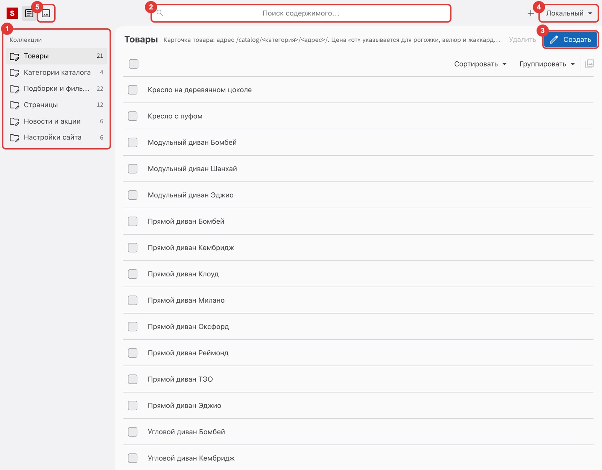
- Админка
- https://takedown-desing.github.io/simmetrika-site/admin/
- Сайт (превью)
- https://takedown-desing.github.io/simmetrika-site/
- Версия инструкции
- 26.10.2026, админка Sveltia CMS 0.250.2
- Вопросы
- Алексей Боровиков
Содержание
- Главное за минуту
- Вход и выход
- Экран админки
- Как правка попадает на сайт
- Товары: поля карточки
- Товары: сохранение и ошибки в форме
- Товары: новый, копия, скрыть, удалить
- Категории каталога
- Подборки и фильтры
- Страницы и главная
- Шпаргалка по тексту страницы
- Новости и акции
- Фото и медиатека
- Настройки сайта
- Работа с телефона
- Публикация не прошла: что значит ошибка
- Чего не делать
- Что пока не работает
- Приложение: как выдать токен (для Алексея)
1. Главное за минуту
- «Сохранить» ещё не меняет сайт. Правка сохраняется в админке. Сайт обновится, когда вы нажмёте Опубликовать изменения, через 2–3 минуты.
- Можно сохранить несколько правок и опубликовать их одним нажатием. Публиковать после каждой запятой не нужно.
- Сломать сайт ошибкой в админке нельзя. Если в данных ошибка, публикация останавливается, а сайт остаётся в прежнем виде. Если через 10 минут правки нет на сайте, напишите Алексею (раздел 4).
- Звёздочка * у поля значит «обязательно». Без него запись не сохранится.
- Адреса страниц пишутся только латиницей, строчными буквами, слова через дефис:
divan-milano. Адрес опубликованной страницы лучше не менять. Если поменяли, старый адрес сам переадресует на новый. - Не трогайте пункты меню записи «Редактировать слаг», «Restore Default», «Clear All» и поле «Robots (служебное)» (раздел 17).
- Цены, сроки, ткани и привязка фото к моделям на сайте сейчас примерные: их заполняли до ответов фабрики. Проверяйте их в первую очередь (раздел 18).
2. Вход и выход
Админка хранит сайт в GitHub, поэтому для входа нужен токен доступа: длинный пароль вида github_pat_11A…. Его выдаёт Алексей (как это сделать, описано в приложении). Токен действует до даты, которую Алексей укажет при выпуске, и даёт право менять только этот сайт.
- Откройте
https://takedown-desing.github.io/simmetrika-site/admin/в Chrome, Яндекс Браузере, Edge или Safari. - Нажмите Войти с помощью токена доступа 1. Кнопка «Войти через GitHub» ✕ пока не работает, её не нажимайте.
- Вставьте токен в поле окна 2 и нажмите Войти 3.
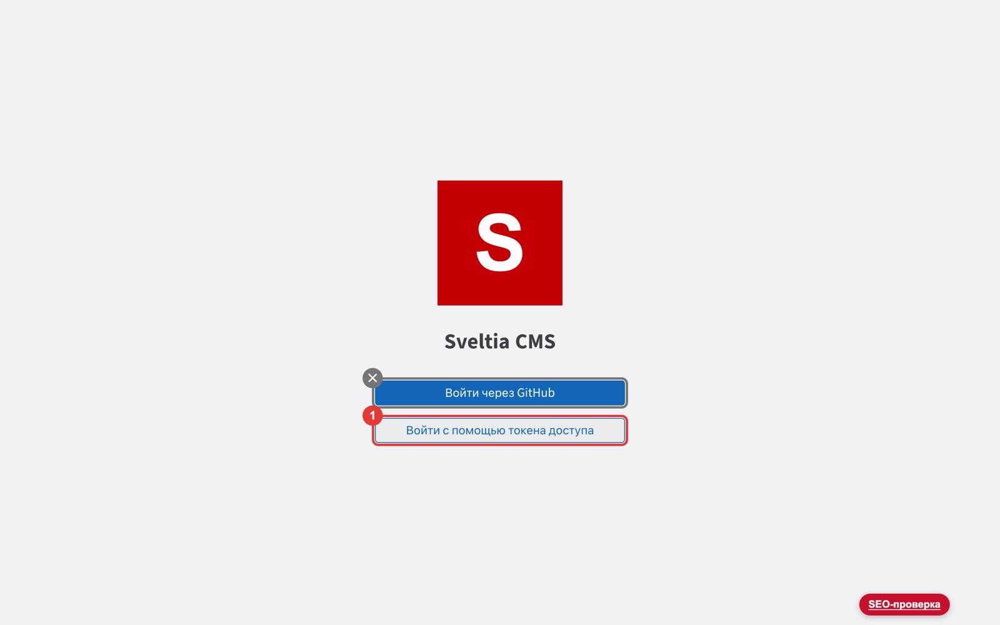
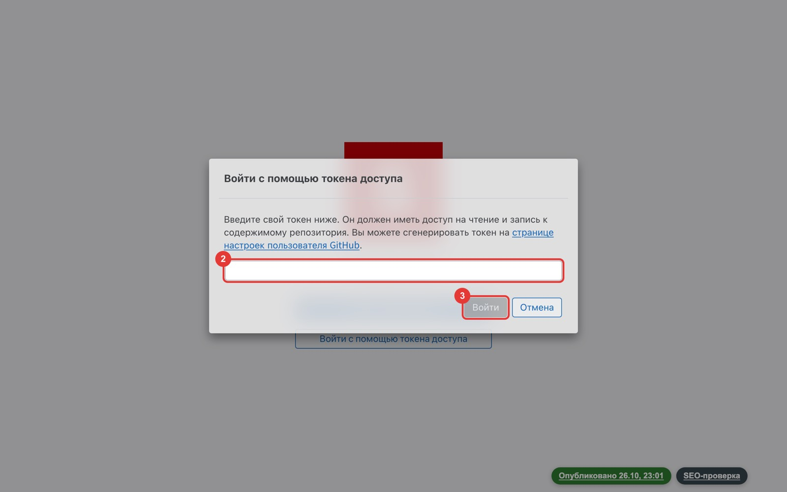
Не пересылайте токен в общих чатах и не вставляйте его никуда, кроме этого окна. Браузер запоминает вход: в следующий раз админка откроется сразу. На чужом компьютере после работы обязательно выйдите. Если токен потерялся или попал к постороннему, скажите Алексею: он отключит старый и выпустит новый.
Выход
Кружок с аватаром справа вверху 1 → Выйти 2. В этом же меню «Рабочий сайт» открывает сайт, «Настройки» меняют язык и тему админки (менять не нужно).
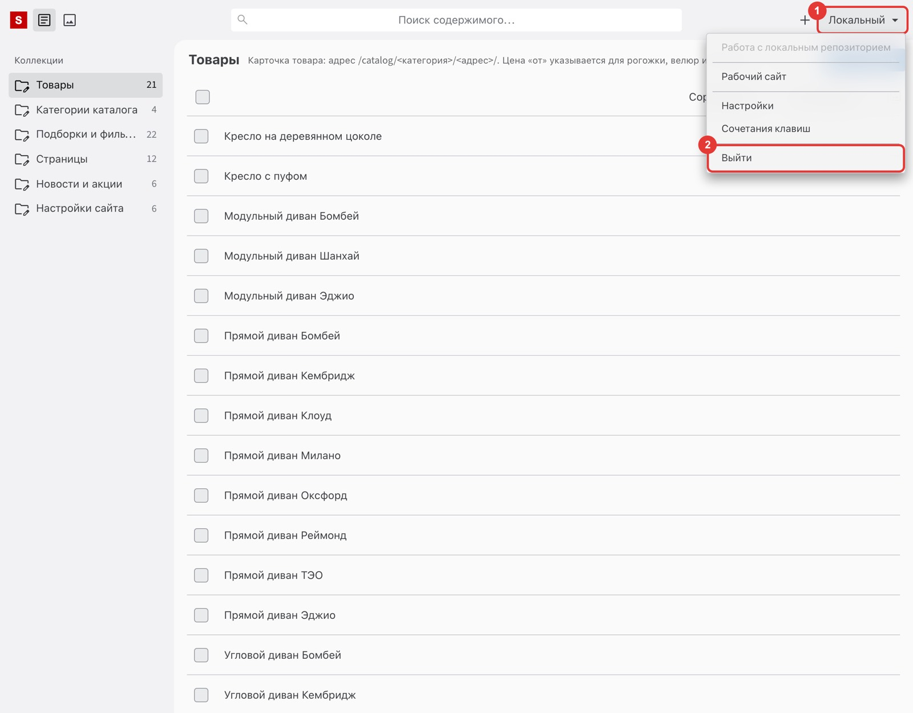
3. Экран админки
- 1Разделы: Товары, Категории каталога, Подборки и фильтры, Страницы, Новости и акции, Настройки сайта.
- 2Поиск по всем разделам сразу: введите слово, например «эджио», и нажмите Enter.
- 3Создать новую запись в открытом разделе.
- 4Меню учётной записи: выход, переход на сайт.
- 5Ресурсы: все загруженные фото (медиатека, раздел 13). «Содержимое» возвращает к разделам.
Вверху справа, рядом с поиском, после входа по токену есть кнопка Опубликовать изменения. На скриншотах её нет: они сняты в тестовом режиме, где публиковать некуда.
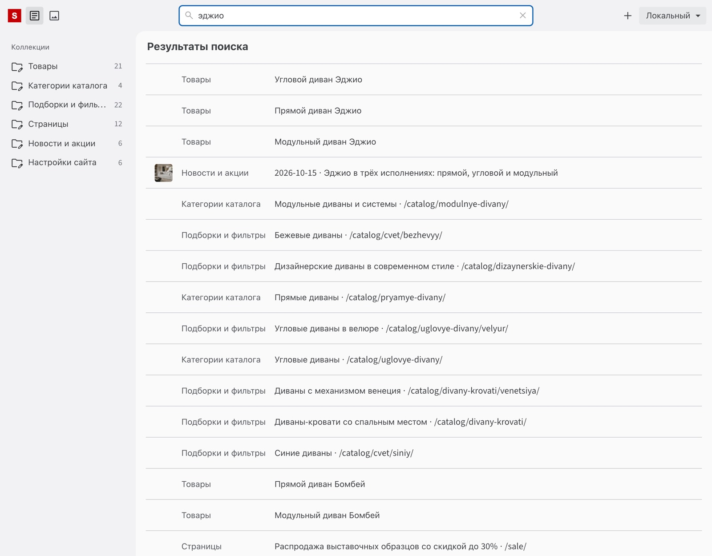
4. Как правка попадает на сайт
- Откройте запись, исправьте поля.
- Нажмите Сохранить вверху формы. Внизу появится «Сохранено 1 запись.» Правка сохранена, но сайт ещё прежний.
- Сделайте остальные правки, каждую сохраните.
- Нажмите Опубликовать изменения вверху справа. Если кнопка серая, публиковать нечего: всё уже на сайте.
- Через 2–3 минуты сайт обновится. Откройте страницу сайта и обновите её (Ctrl+F5 или ⌘+Shift+R), чтобы увидеть изменения.
Если правка не появилась на сайте
Если в данных ошибка, публикация останавливается, а на сайте остаётся последняя удачная версия. Посетители ничего не замечают. Алексею в этот момент приходит письмо от GitHub с причиной.
- Подождите 10 минут после «Опубликовать изменения» и обновите страницу сайта (Ctrl+F5 или ⌘+Shift+R).
- Если правки всё ещё нет, напишите Алексею, какую запись правили. Он пришлёт, что исправить. Расшифровка частых ошибок в разделе 16.
- Исправьте запись в админке, сохраните и снова нажмите «Опубликовать изменения».
Черновики: если закрыли запись, не сохранив
Кнопка Отменить редактирование (крестик слева вверху формы) закрывает запись без вопроса, даже если в ней есть несохранённые правки. Правки не теряются: админка держит их как черновик в этом браузере. Так же черновик остаётся, если закрыть вкладку или браузер.
Когда вы снова откроете эту запись, появится окно «Восстановить черновик»:
- Восстановить 1: вернуть несохранённые правки и продолжить. Потом нажмите «Сохранить».
- Отбросить 2: забыть их и открыть запись как она сохранена.
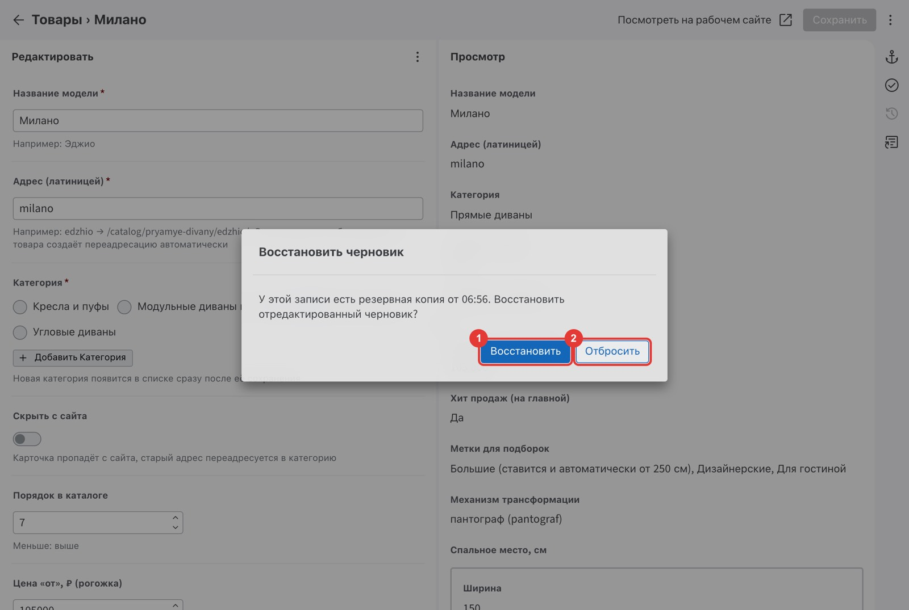
5. Товары: поля карточки
Раздел Товары: все модели каталога. Одна модель в разных исполнениях (например, Эджио прямой, угловой и модульный) это разные записи, у каждой своя категория.
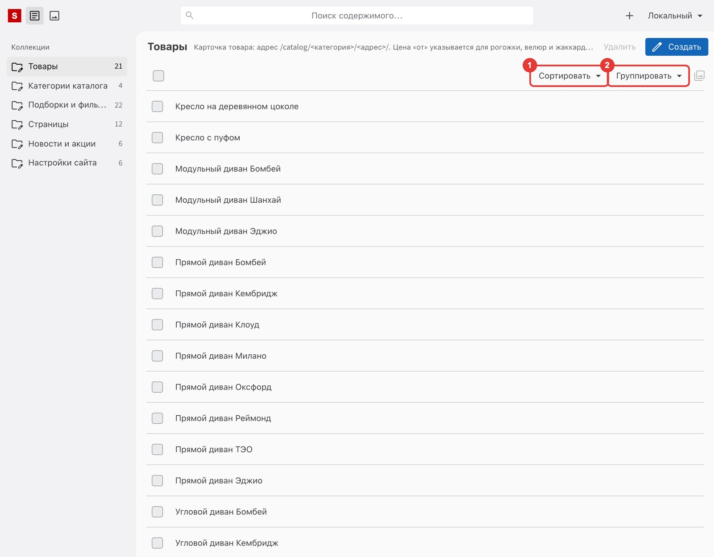
Нажмите на строку, чтобы открыть карточку. Вверху формы панель:
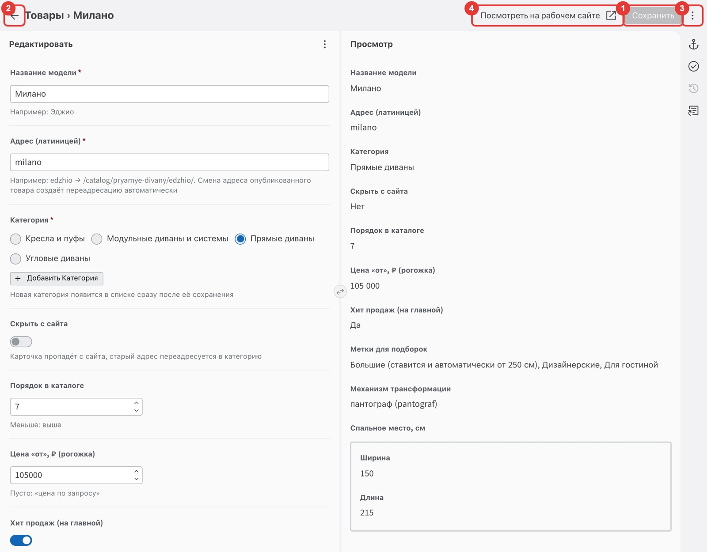
Кнопка 4 показывает опубликованную версию. Только что созданный товар откроется на сайте после публикации, до неё будет страница «не найдено».
Название, адрес, категория
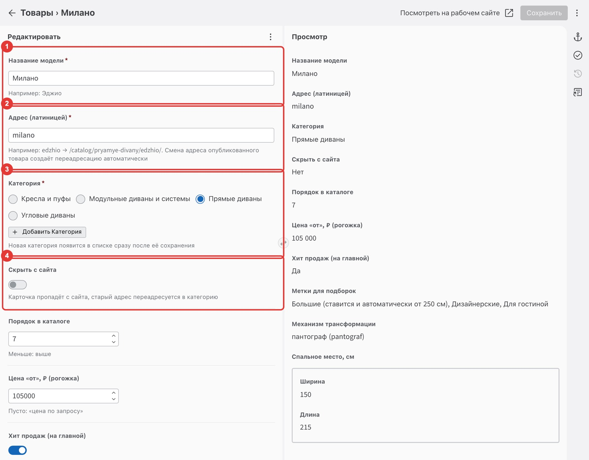
| Поле | Что писать |
|---|---|
| 1Название модели * | Коротко: «Милано», «Эджио». Полное название для заголовка задаётся в SEO-блоке (H1). |
| 2Адрес (латиницей) * | Последняя часть адреса карточки: milano → /catalog/pryamye-divany/milano/. Только строчная латиница, цифры, дефис. Смена адреса у опубликованного товара сама ставит переадресацию со старого. |
| 3Категория * | Выбор из списка категорий. Определяет, где товар лежит в каталоге и его адрес. |
| 4Скрыть с сайта | Карточка пропадёт с сайта и из подборок, старый адрес будет вести в категорию. Запись остаётся в админке, можно вернуть. |
Порядок, цена, хит, метки
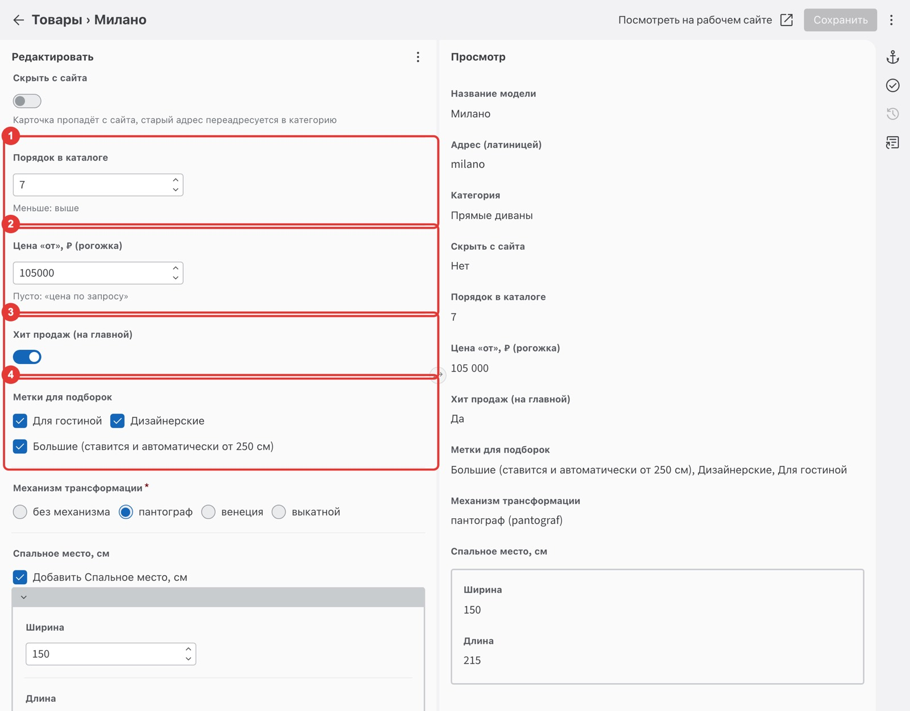
| 1Порядок в каталоге | Число: меньше = выше в списке категории. 1, 2, 3… |
| 2Цена «от», ₽ (рогожка) | Только цифры, без пробелов и «₽»: 58900. Это цена в самой дешёвой ткани, рогожке. Цены в велюре и жаккарде сайт считает сам по коэффициентам из «Настройки → Ткани, цвета, механизмы». Пустое поле = «цена по запросу». |
| 3Хит продаж (на главной) | Включено: товар попадает в блок хитов на главной и в подборки «хиты». |
| 4Метки для подборок | «Для гостиной», «Дизайнерские», «Большие». По ним товар попадает в соответствующие подборки. «Большие» ставится и сама, если длина от 250 см. |
Механизм и размеры
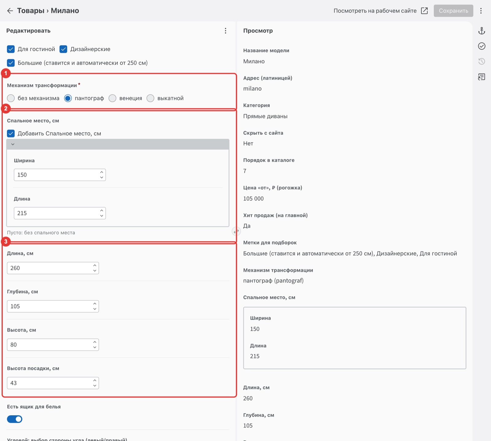
- 1Механизм трансформации *: из списка. Для дивана без раскладки «Без механизма».
- 2Спальное место, см: ширина и длина. Оставьте пустым, если спального места нет: тогда товар не попадёт в «Диваны-кровати».
- 3Длина, глубина, высота, высота посадки, в сантиметрах, только цифры. Из них собирается таблица размеров на карточке.
- Ниже два переключателя: Есть ящик для белья и Угловой: выбор стороны угла (на сайте появится выбор «левый/правый»).
Срок, наличие, гарантия
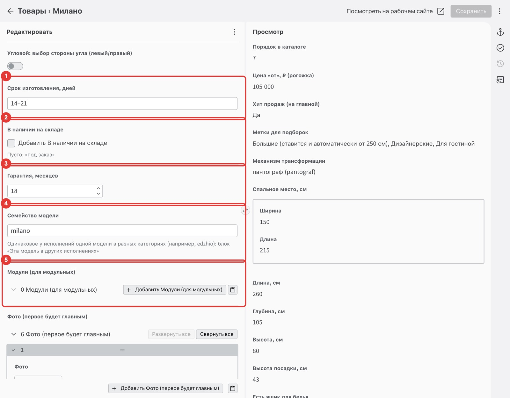
- 1Срок изготовления, дней: текстом, можно диапазон:
14–21. - 2В наличии на складе: поставьте галочку и выберите материал и цвет готового дивана на складе. Пусто = «под заказ». Товар с наличием попадает в подборку «Диваны в наличии».
- 3Гарантия, месяцев: число. Пусто = гарантия по умолчанию из «Настройки → Компания и контакты».
- 4Семейство модели: одинаковое слово у всех исполнений одной модели (у трёх Эджио это
edzhio). По нему на карточке появляется блок «Эта модель в других исполнениях». - 5Модули: список модулей для модульных диванов (секции, угловой модуль, оттоманка). У обычных диванов пусто.
Фото
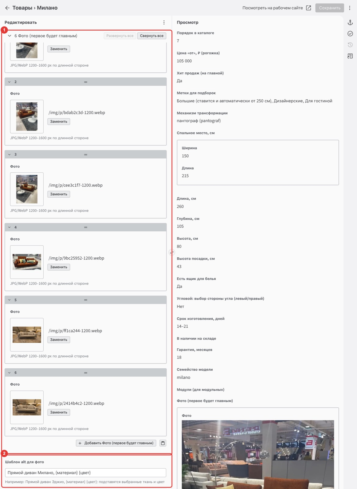
- 1Фото (первое будет главным): первое фото идёт в каталог и на обложку карточки. Добавить: Добавить → «Обзор» → выбрать из медиатеки или загрузить с компьютера. Порядок меняется перетаскиванием за левый край строки. Подробнее о фото в разделе 13.
- 2Шаблон alt для фото: описание фото для поисковиков и незрячих. Можно со вставками:
Прямой диван Милано, {материал} {цвет}, сайт подставит выбранные покупателем ткань и цвет.
Выставочные образцы (распродажа)
Если модель стоит в шоуруме и её продают со скидкой, добавьте образец: Добавить под «Выставочные образцы». Образец появится на карточке и на странице «Распродажа».
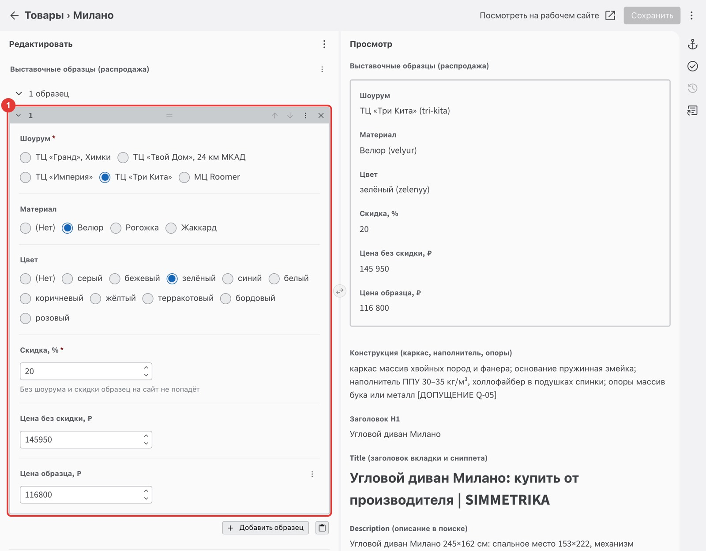
Шоурум * и Скидка, % * (от 1 до 90) обязательны. Цены пишутся цифрами. Продали образец: нажмите на строке образца Убрать и сохраните.
Сразу после образцов поле Конструкция (каркас, наполнитель, опоры): из чего сделана модель. Оно выводится на карточке в характеристиках.
SEO-блок
Есть у каждой записи на сайте (товары, категории, подборки, страницы, новости).
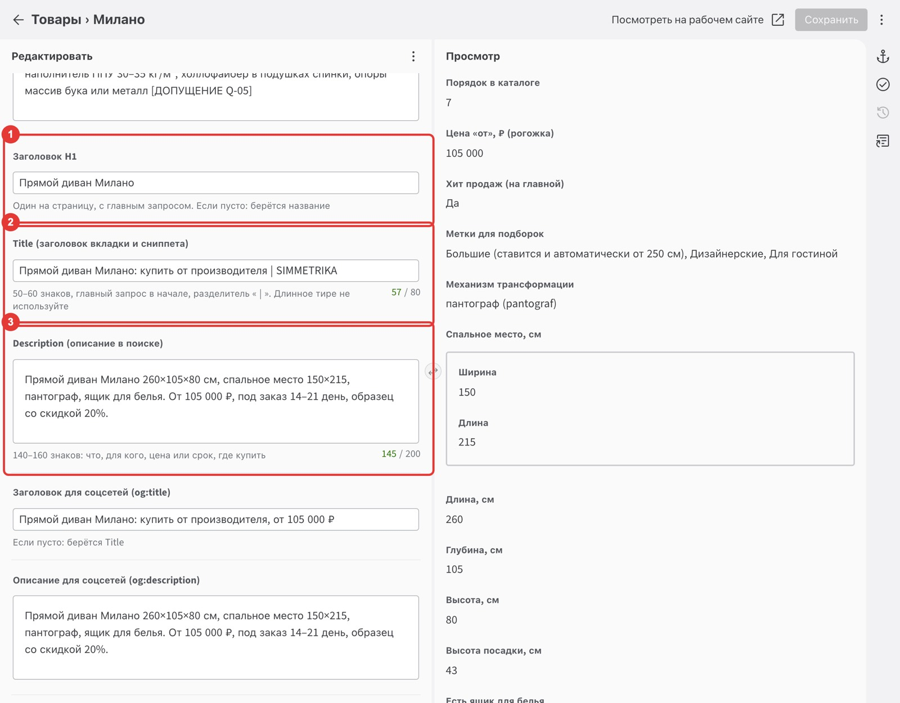
| 1Заголовок H1 | Главный заголовок на странице: «Прямой диван Милано». Один на страницу. Пусто = берётся название. |
| 2Title | Заголовок вкладки браузера и ссылки в поиске. Старайтесь уложиться в 50–60 знаков, главный запрос в начале, в конце « | SIMMETRIKA». Счётчик справа показывает предел 80: больше админка не даст, но SEO-проверка сделает замечание уже после 65. Длинное тире «—» не используйте. Пусто = «H1 | SIMMETRIKA». |
| 3Description | Описание под ссылкой в поиске, 140–160 знаков: что это, цена или срок, где купить. Счётчик показывает предел 200, замечание будет после 170. |
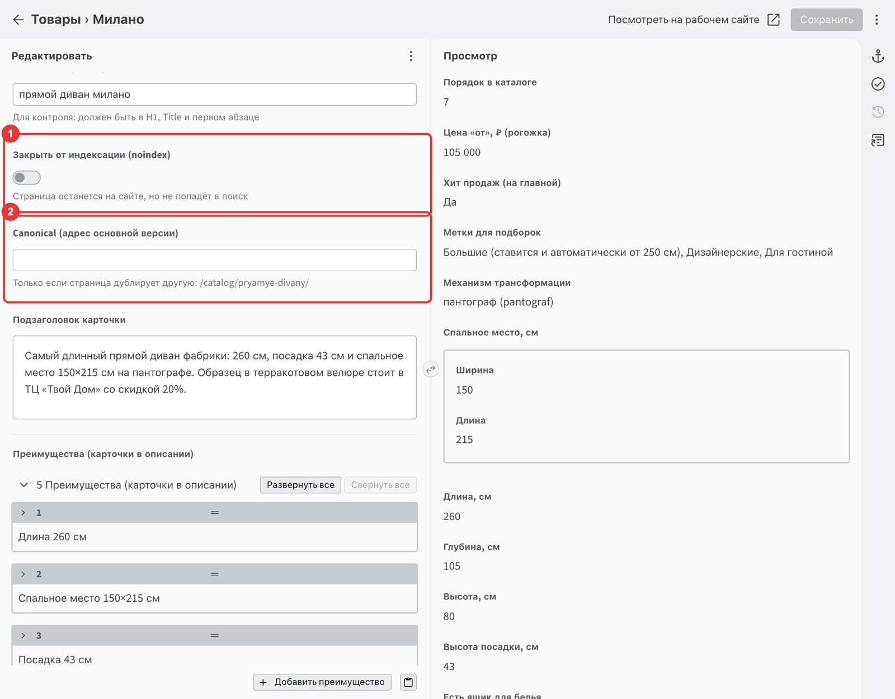
- Заголовок и описание для соцсетей (og:): как выглядит ссылка в мессенджерах. Пусто = берутся Title и Description. Обычно оставляют пустыми.
- Главный запрос страницы: для контроля. Он должен стоять в H1 и в Title.
- 1Закрыть от индексации (noindex): страница останется на сайте, но поисковики её не покажут. Включать только по согласованию с SEO.
- 2Canonical: оставлять пустым. Заполняет SEO-специалист.
Подзаголовок, преимущества, описание, FAQ
- Подзаголовок карточки: 1–2 предложения под названием.
- Преимущества: карточки «заголовок + пояснение» в описании модели.
- Описание модели: вводный абзац, затем разделы с заголовками
### Конструкция и материалы,### Для какой комнаты. Каждый раздел станет карточкой. Шпаргалка по разметке в разделе 11. - Вопросы и ответы (FAQ): вопрос и ответ на 40–60 слов, без ссылок. Попадают на страницу и в разметку для поисковиков. Пустой вопрос или ответ остановит публикацию.
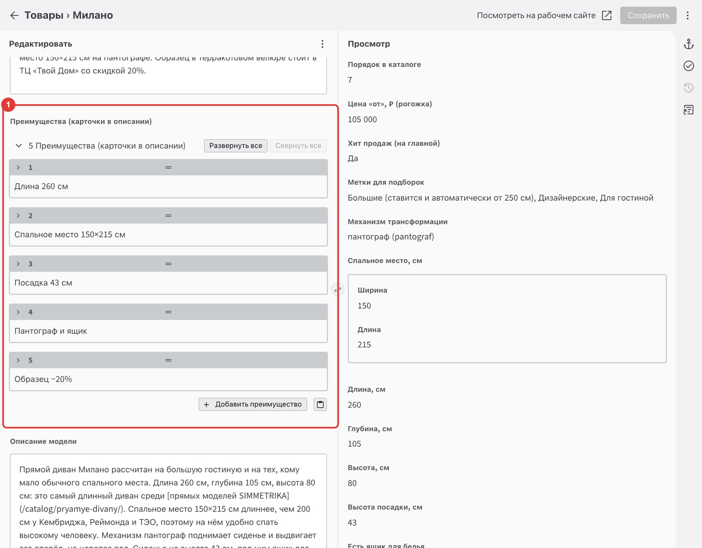
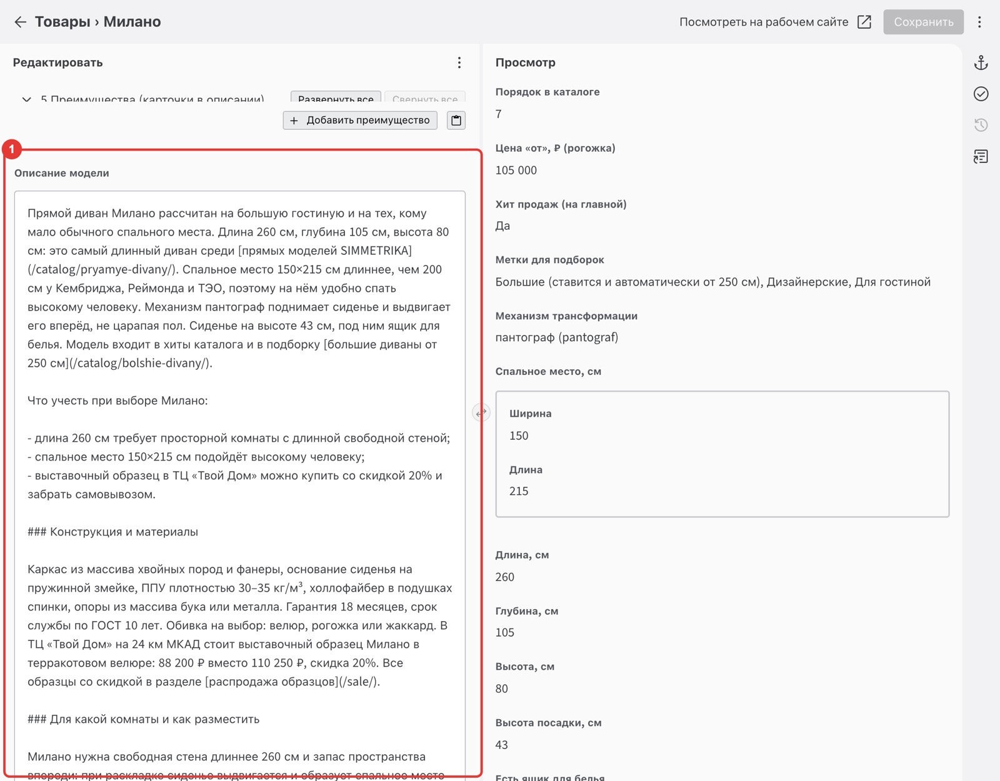
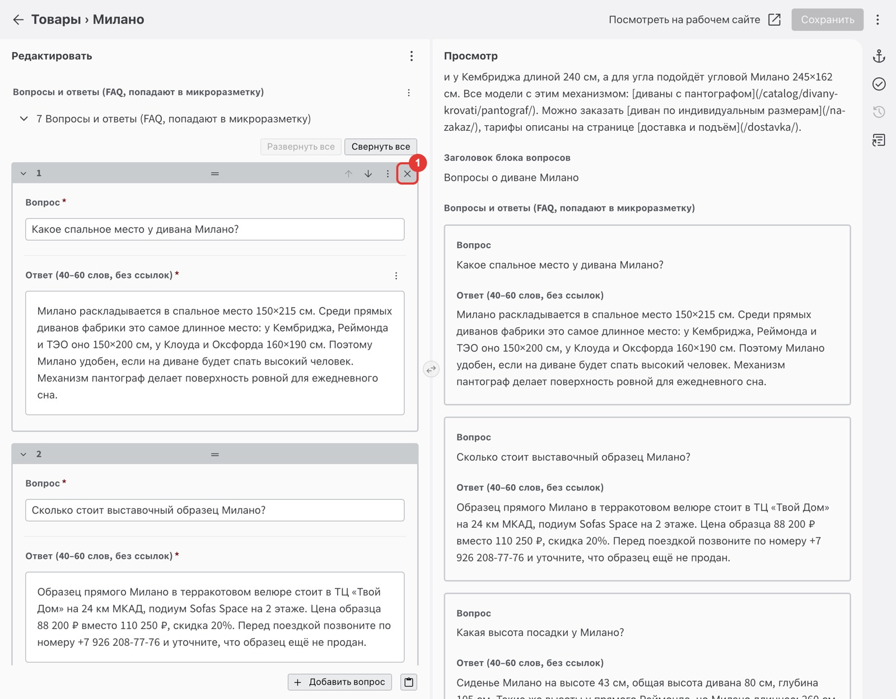
После «Убрать» внизу появляется «Item removed.». Пока вы не нажали «Сохранить», ничего не потеряно: закройте запись крестиком «Отменить редактирование», откройте снова и в окне черновика нажмите «Отбросить». Запись откроется в сохранённом виде.
6. Товары: сохранение и ошибки в форме
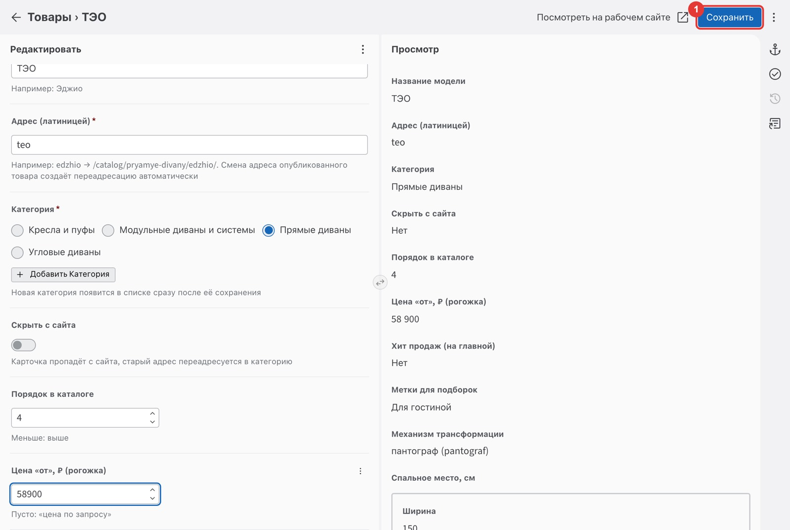
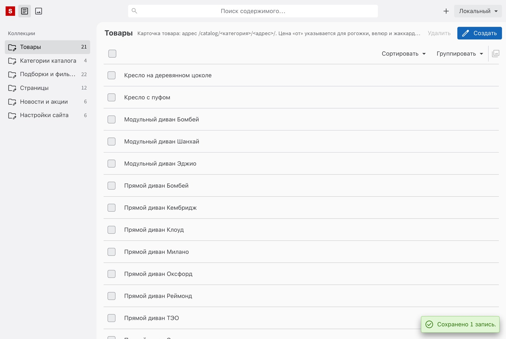
Если обязательное поле пустое или заполнено неверно, админка не сохранит запись. Внизу появится сообщение, сколько полей с ошибками, а поле подсветится красным с пояснением. Кнопка Show Errors в сообщении прокручивает к первой ошибке.
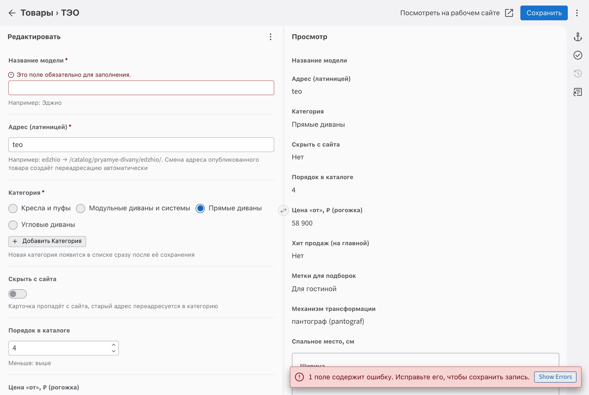
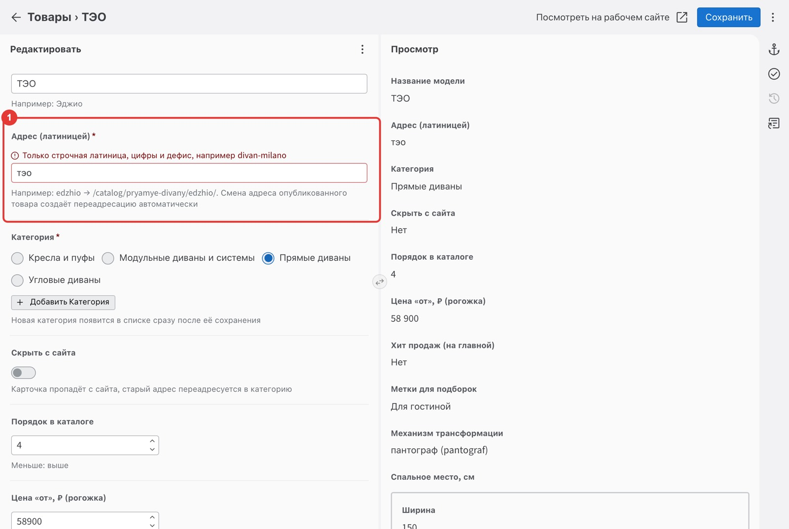
teoКак писать адрес латиницей: «Милано» → milano, «Тейлор» → teylor, «Кембридж» → kembridzh, «Угловой диван» → uglovoy-divan. Ё → e, Й → y, Ж → zh, Х → h, Ц → ts, Ч → ch, Ш → sh, Щ → sch, Ы → y, Ь и Ъ пропускать, Э → e, Ю → yu, Я → ya.
7. Товары: новый, копия, скрыть, удалить
Меню записи
Кнопка с тремя точками ⋮ справа вверху формы.
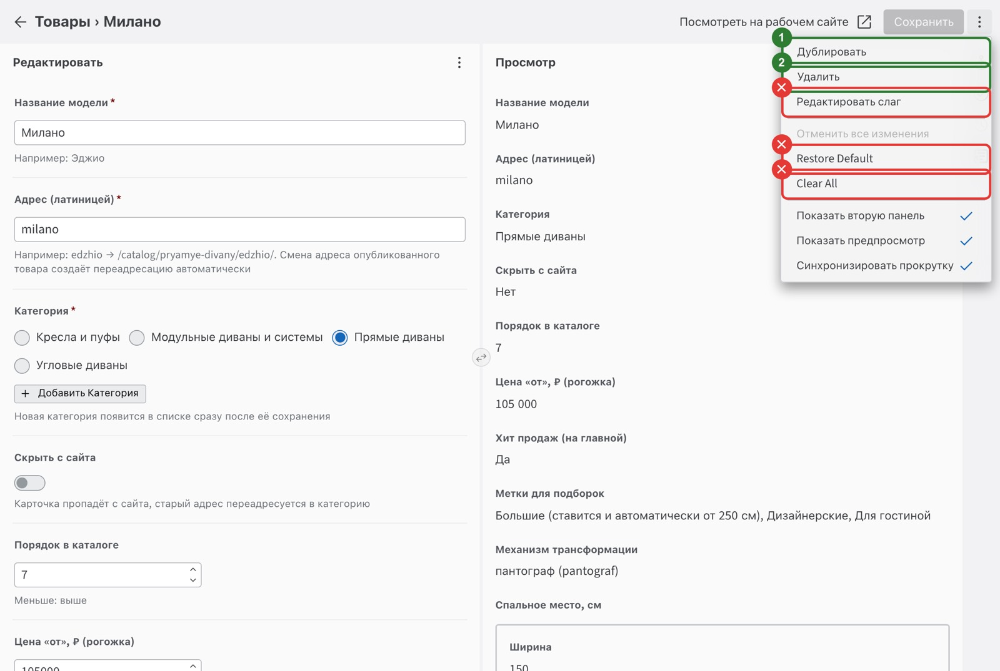
Новый товар с нуля
- Раздел «Товары» → кнопка «Создать» (раздел 3, номер 3).
- Заполните «Название модели», «Адрес (латиницей)» и «Категорию» 1–3, механизм, размеры, цену, фото, H1, Title и Description.
- Сохраните и опубликуйте.
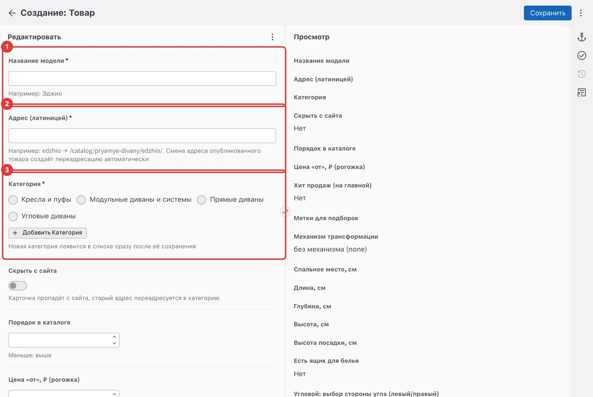
Новый товар копированием (быстрее)
Если новая модель похожа на существующую, откройте похожую → ⋮ → Дублировать. Откроется «Создание: Товар» со всеми полями копии.
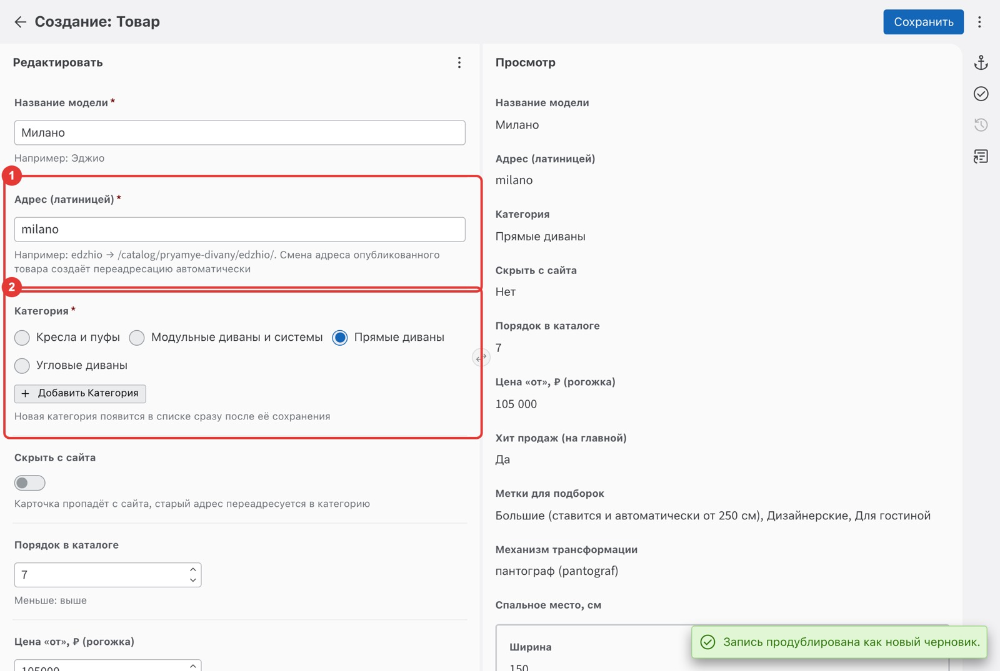
Копия получает тот же адрес и ту же категорию, что оригинал. Админка такую копию сохранит, но публикация остановится с ошибкой «адрес … уже занят». Перед сохранением поменяйте у копии «Адрес (латиницей)» и, если нужно, категорию, затем название, H1, Title, Description, цену и фото.
Скрыть товар (снять с продажи на время)
Включите «Скрыть с сайта» в начале формы, сохраните, опубликуйте. Карточка пропадёт с сайта, старый адрес будет вести в категорию. Вернуть: выключить галочку.
Удалить товар
⋮ → Удалить → подтвердить. Если сомневаетесь, лучше скрыть: скрытый товар легко вернуть.
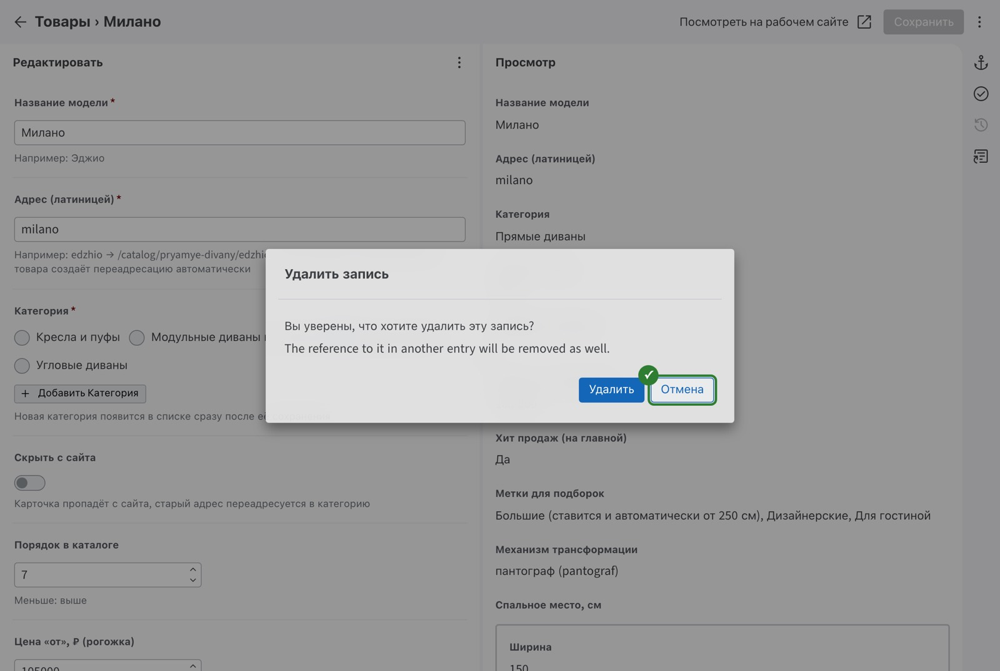
Если на товар ссылается новость («Товары по теме»), в окне будет английская фраза «The reference to it in another entry will be removed as well.»: товар уберётся и из новости. Адрес удалённого товара сам будет вести в его категорию.
Поменять адрес товара
Исправьте «Адрес (латиницей)» или категорию, сохраните, опубликуйте. Со старого адреса автоматически будет переадресация на новый, поэтому старые ссылки продолжат работать. Если старый адрес стоит в текстах других страниц, SEO-проверка напишет замечание «ссылка на старый адрес»: такие ссылки лучше поправить. Без нужды адреса не меняйте: поисковикам нужно время, чтобы переучиться.
8. Категории каталога
Категория = страница /catalog/адрес/ со всеми товарами, у которых она выбрана. Сейчас их четыре: прямые, угловые, модульные диваны и кресла с пуфами.
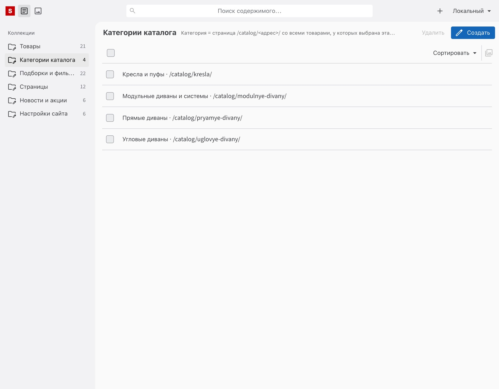
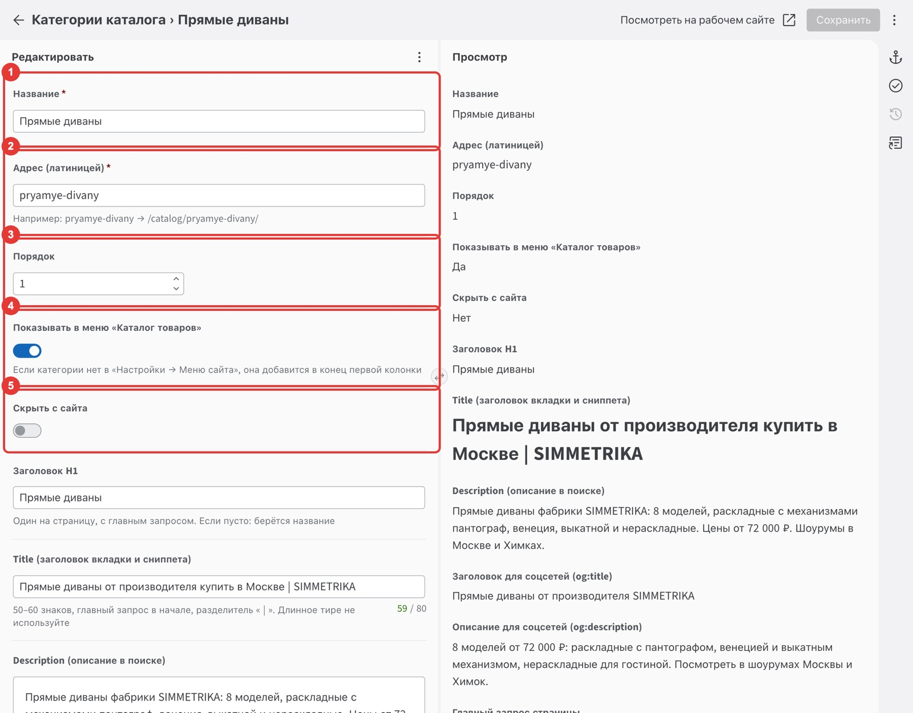
- 1Название *, 2Адрес * латиницей:
pryamye-divany→/catalog/pryamye-divany/. - 3Порядок: место в списке категорий.
- 4Показывать в меню «Каталог товаров»: новая категория сама допишется в конец первой колонки меню каталога.
- 5Скрыть с сайта: скрывает категорию вместе со всеми её товарами.
- Ниже SEO-блок и текст страницы, как у страниц (разделы 5 и 10).
Новая категория: «Создать», название, адрес, SEO-блок → сохранить. Она сразу появится в выборе «Категория» у товаров, публиковать для этого не нужно. Товары в неё переносятся выбором категории в каждом товаре.
Удалить категорию, в которой есть товары, нельзя: публикация остановится с ошибкой «значение … не найдено среди записей «Категории каталога» (запись удалена?)». Сначала перенесите товары в другие категории.
9. Подборки и фильтры
Подборка это страница вроде «Диваны в велюре» или «Серые диваны». Товары в неё отбираются автоматически по правилу: руками их добавлять не нужно. Новый товар в велюре сам появится в «Диванах в велюре».
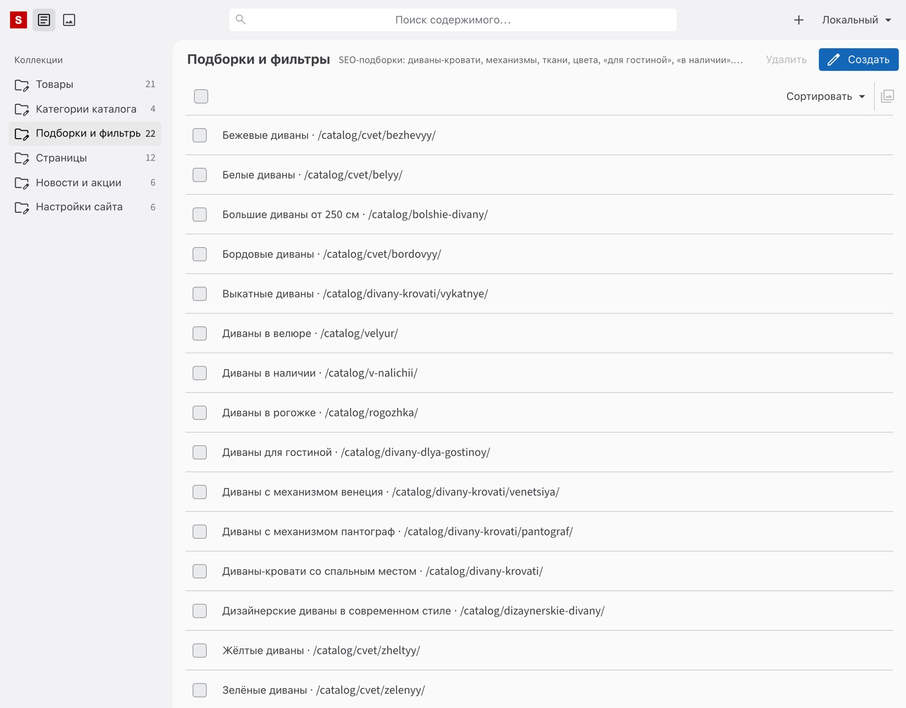
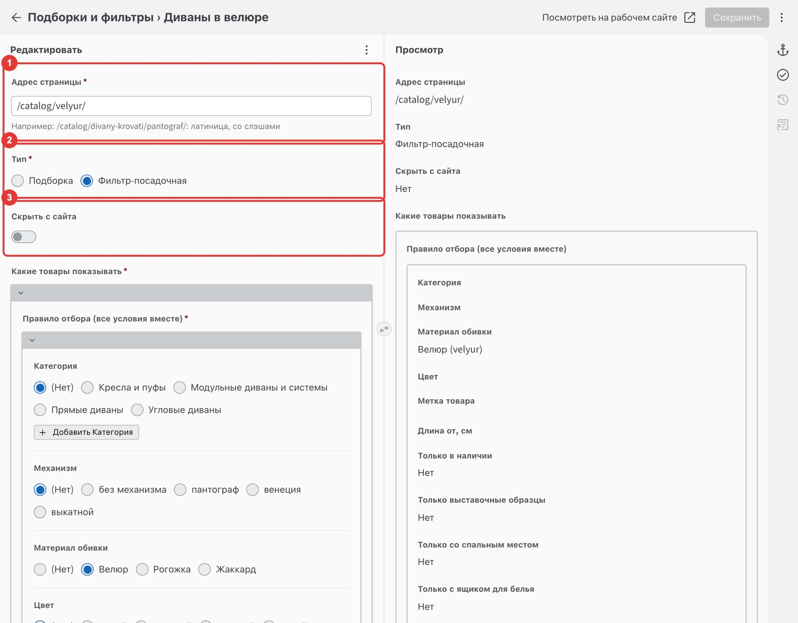
/catalog/velyur/ 2 тип 3 скрыть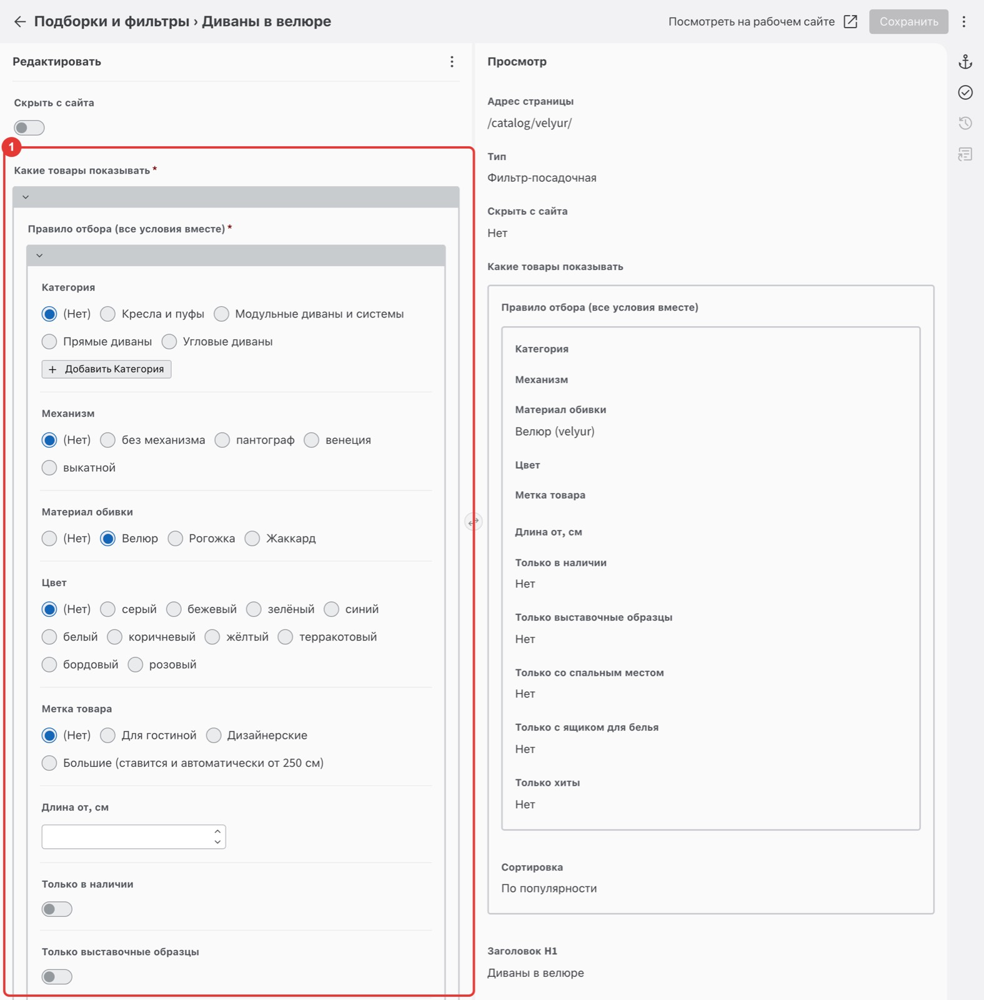
Правило отбора: все выбранные условия действуют вместе. Например, «Категория: Прямые диваны» + «Материал: Велюр» = прямые диваны в велюре. Условия: категория, механизм, материал обивки, цвет, метка, длина от (см), только в наличии, только выставочные образцы, только со спальным местом, только с ящиком для белья, только хиты. Сортировка: по популярности, дешевле, дороже, по скидке.
Если по правилу набралось меньше 3 товаров, подборка остаётся на сайте, но закрывается от поисковиков. Когда товаров станет 3 и больше, она откроется сама.
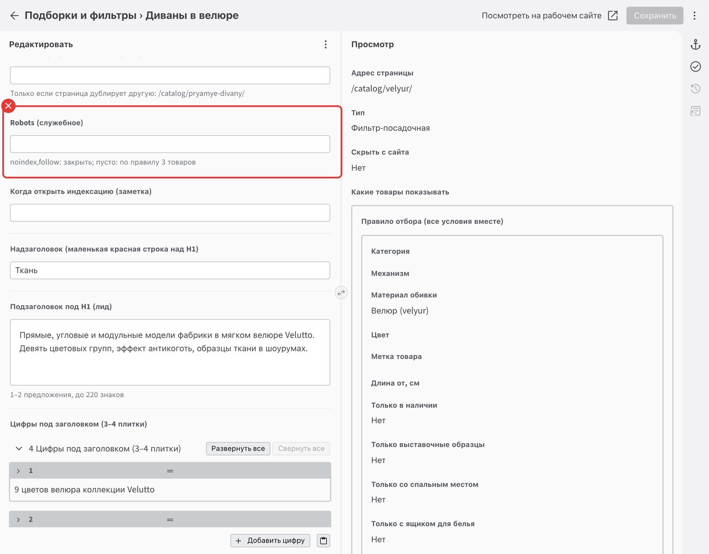
10. Страницы и главная
Главная, каталог, распродажа, «на заказ», доставка, о фабрике, контакты, политика конфиденциальности и служебные страницы (заявка, 404).
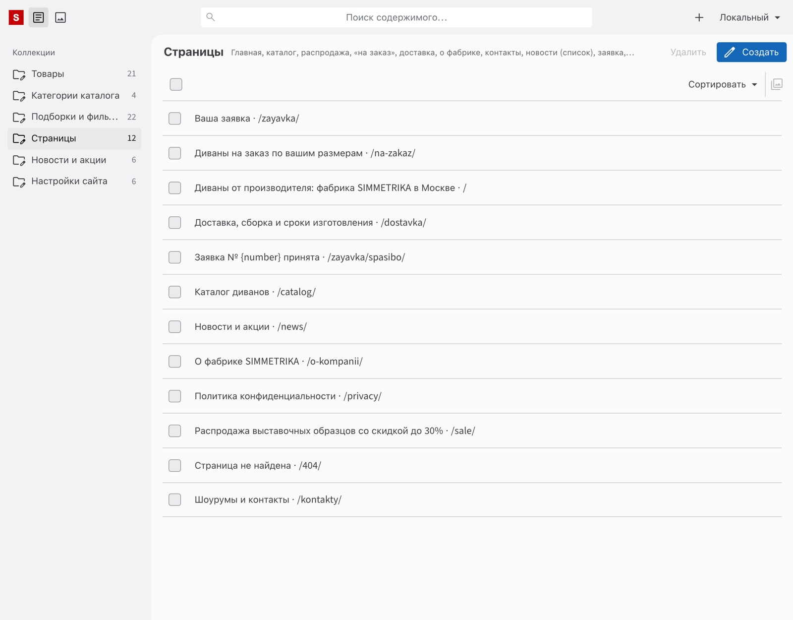
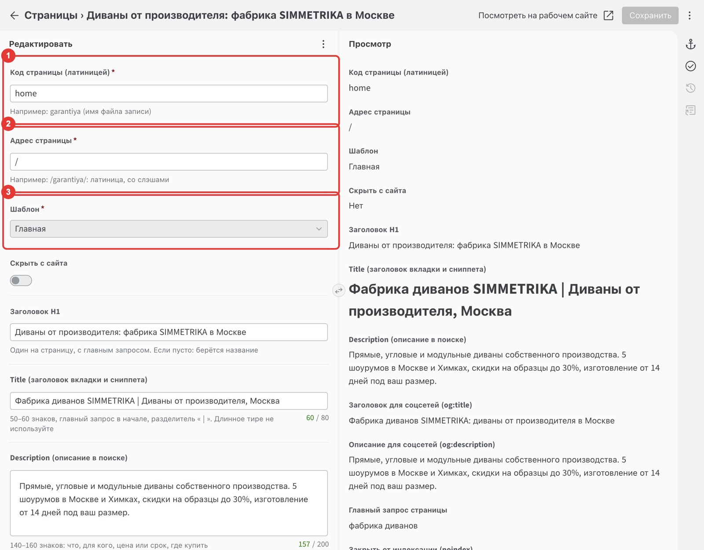
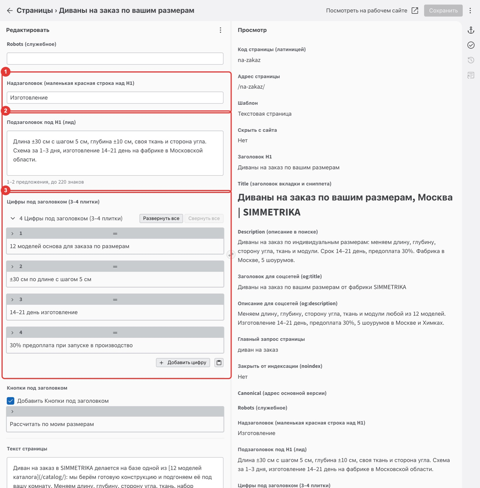
Ниже: Кнопки под заголовком (текст и ссылка, например /catalog/, или действие «Открыть форму обратного звонка»), Текст страницы, FAQ, Смотрите также (адрес, заголовок, строка) и Картинки страницы (место: hero первый экран, tile-… плитки, inline-1 в тексте).
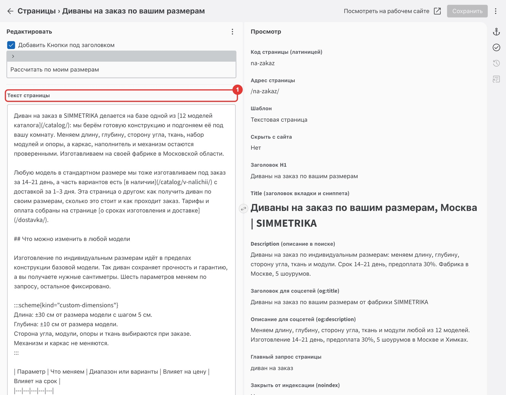
Новая страница (например, «Гарантия»)
- Раздел «Страницы» → «Создать».
- Код страницы:
garantiya. Адрес:/garantiya/(со слэшами в начале и в конце). Шаблон: «Текстовая страница». - H1, Title, Description, текст. Сохранить, опубликовать.
- Чтобы на страницу можно было попасть, добавьте её в меню (раздел 14) или поставьте на неё ссылку из текста другой страницы. Иначе посетители её не найдут.
11. Шпаргалка по тексту страницы
Поля «Текст страницы» и «Описание модели» пишутся простой разметкой (Markdown). Её видно как символы в админке, на сайте она превращается в оформление. Эта же шпаргалка есть в подсказке под полем.
| Пишете в админке | На сайте |
|---|---|
## Доставка по Москве | Заголовок раздела |
### Сроки | Подзаголовок |
**бесплатно** | бесплатно (жирный) |
[угловые диваны](/catalog/uglovye-divany/) | ссылка «угловые диваны» |
- пункт (каждый с новой строки) | • список |
| пустая строка | новый абзац |
В ссылках пишите адрес страницы сайта со слэшами, без домена: /sale/, /catalog/pryamye-divany/milano/. Ссылка на несуществующую страницу остановит публикацию.
Готовые блоки «:::»
Блок начинается строкой с :::название и заканчивается отдельной строкой :::. Проще всего копировать блоки, которые уже есть в тексте, и менять в них только слова в кавычках.
:::products{rule="category=pryamye-divany"}
:::
Карточки товаров по правилу: category= категория, material= ткань, color= цвет, mechanism= механизм, in_stock=1 в наличии, sample=1 образцы, hit=1 хиты. Несколько условий через запятую: rule="category=uglovye-divany,material=velyur". Коды категорий, тканей и цветов это их адреса и коды из админки.
:::tiles{items="/catalog/velyur/,/sale/"}
:::
Плитки-ссылки на разделы. Похожий блок :::chips{items="…"} делает маленькие ссылки-чипы.
:::cta{href="/na-zakaz/" label="Рассчитать диван по размерам"}
Сделаем диван под размеры вашей комнаты.
:::
Призыв с кнопкой. Похожие блоки с текстом внутри: :::note заметка, :::steps{title="Как заказать"} список шагов, :::compare{title="…"} таблица сравнения.
Блоки без настроек (просто строка и закрывающая :::): :::filters фильтры, :::swatches ткани, :::showrooms шоурумы, :::map карта, :::news{limit="3"} последние новости, :::form{type="question"} форма, :::spec-table{rule="…"} таблица размеров.
- Забыли закрывающую строку
:::→ «вставка не закрыта: не хватает строки «:::»». - Опечатка в названии блока → «неизвестная вставка».
- Кавычки «ёлочки» вместо прямых
"или забытая кавычка → «непарные кавычки».
Все эти ошибки остановят публикацию, сайт не сломается. Исправьте текст и опубликуйте снова.
12. Новости и акции
Новость или акция открывается по адресу /news/адрес/. Последние записи сами выводятся на главной и в разделе «Новости».
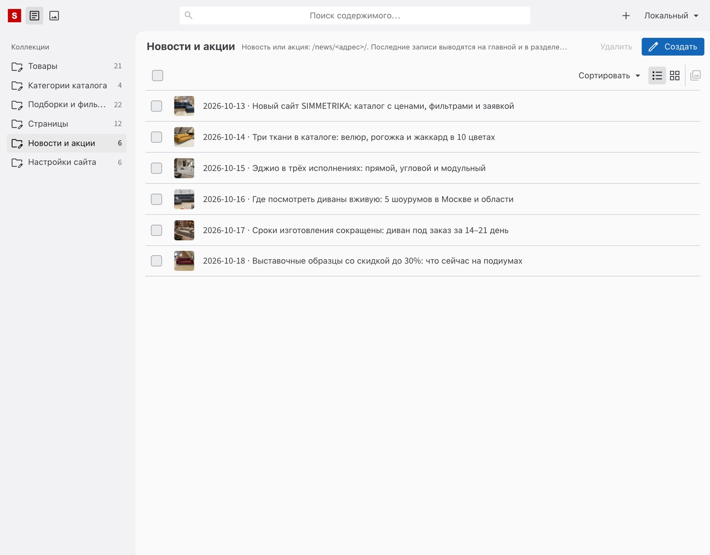
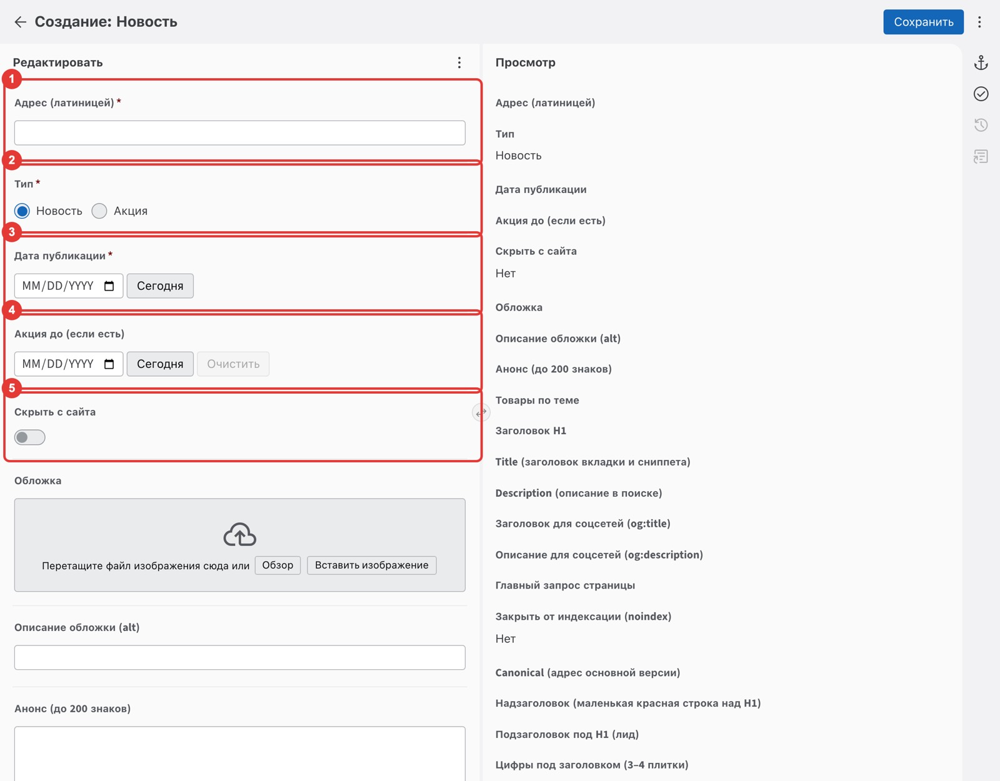
Дата выбирается в календаре. Админка показывает её в формате браузера (иногда месяц/день/год). На сайте она будет как положено, по-русски.
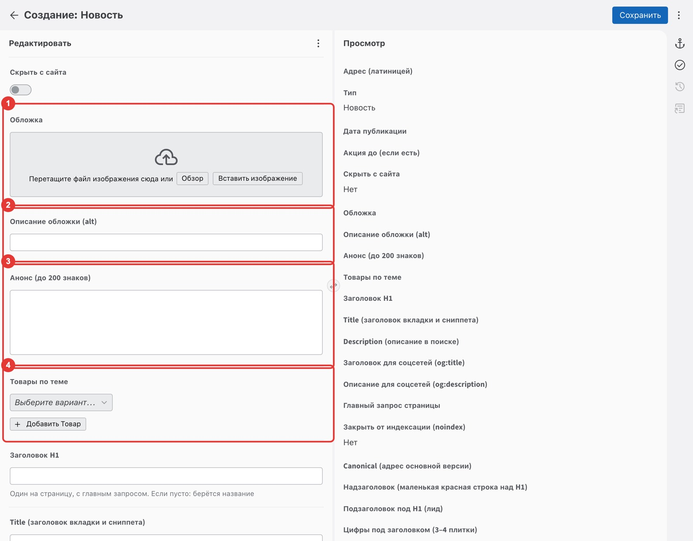
- Обложка: «Обзор» → загрузить фото или выбрать из медиатеки (раздел 13).
- Товары по теме: начните вводить название модели и выберите из списка. Товары покажутся карточками под новостью. Если товар потом переименуют или поменяют адрес, ссылка в новости не сломается.
- Ниже SEO-блок и текст новости, как у страниц.
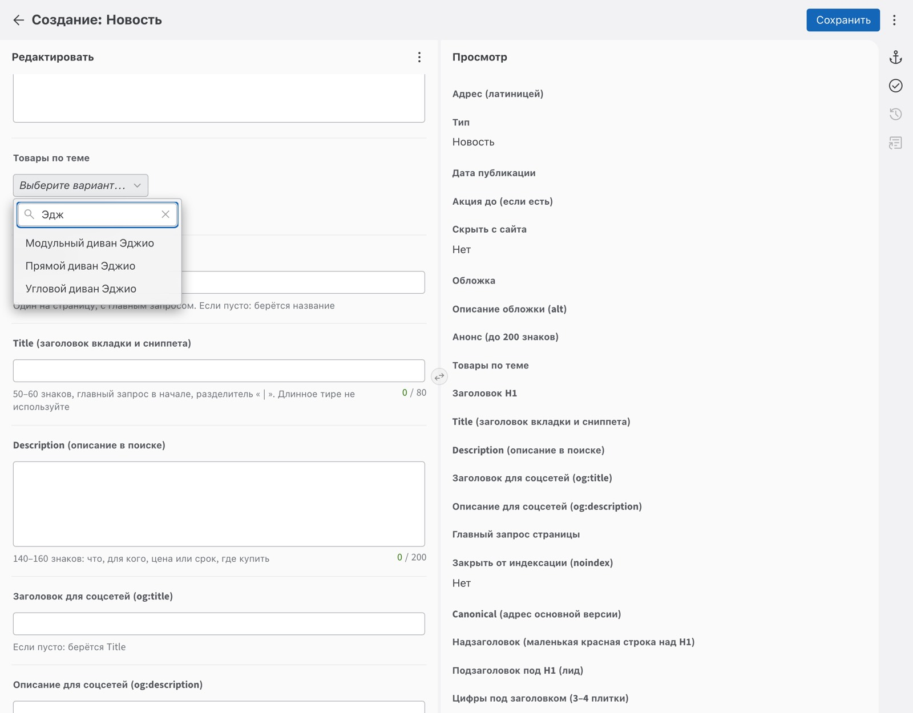
13. Фото и медиатека
Фото загружаются через кнопку «Обзор» у поля с картинкой или в разделе «Ресурсы» (вверху, рядом с «Содержимое»).
Все фото сайта лежат в одной медиатеке: снимки фабрики и то, что загрузите вы. Любое из них можно выбрать в любом поле с картинкой: у товара, новости, страницы, категории.
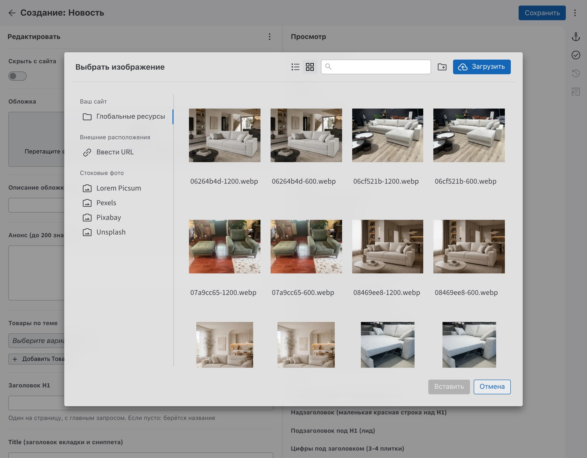
Каждое фото фабрики лежит в двух размерах: …-1200.webp (большое) и …-600.webp (уменьшенная копия того же снимка). В карточку выбирайте файл -1200: сайт сам покажет на телефоне уменьшенную копию. Если выбрать -600, на компьютере фото будет мутным.
Слева в окне есть «Стоковые фото» (Pexels, Pixabay, Unsplash, Lorem Picsum). Для каталога их не используйте: на сайте должны быть только диваны фабрики. «Ввести URL» тоже не нужен.
- Формат: JPG, PNG или WebP, до 20 МБ. Админка сама уменьшит фото до 1600 пикселей по длинной стороне и сожмёт в WebP.
- Имя файла можно писать по-русски, админка переведёт его в латиницу: «Милано серый.jpg» →
milano-seryy.webp. Лучше называть файл по модели и цвету. - Фото товара лучше снимать в одном стиле: одинаковый фон, ракурс, свет.
- После загрузки фото нужно ещё выбрать в поле записи и сохранить запись.
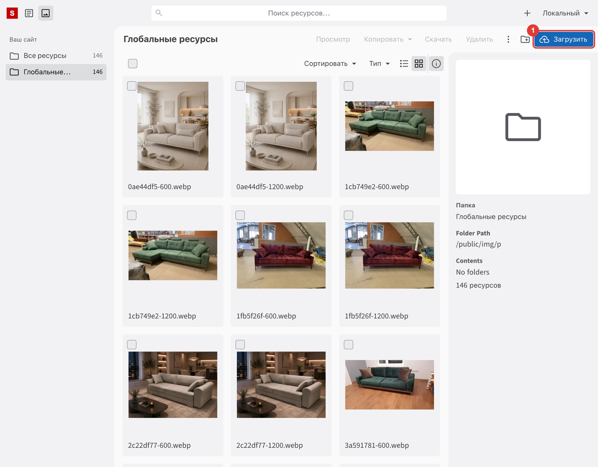
Если удалить из медиатеки фото, которое стоит в какой-то записи, публикация остановится с ошибкой «нет файла картинки». Сначала замените фото в записи, потом удаляйте файл.
14. Настройки сайта
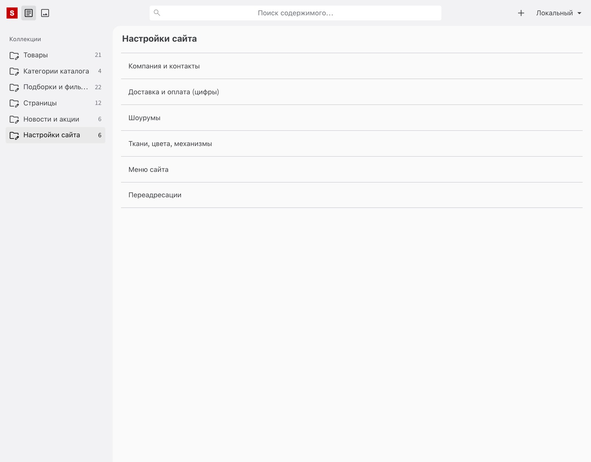
Компания и контакты
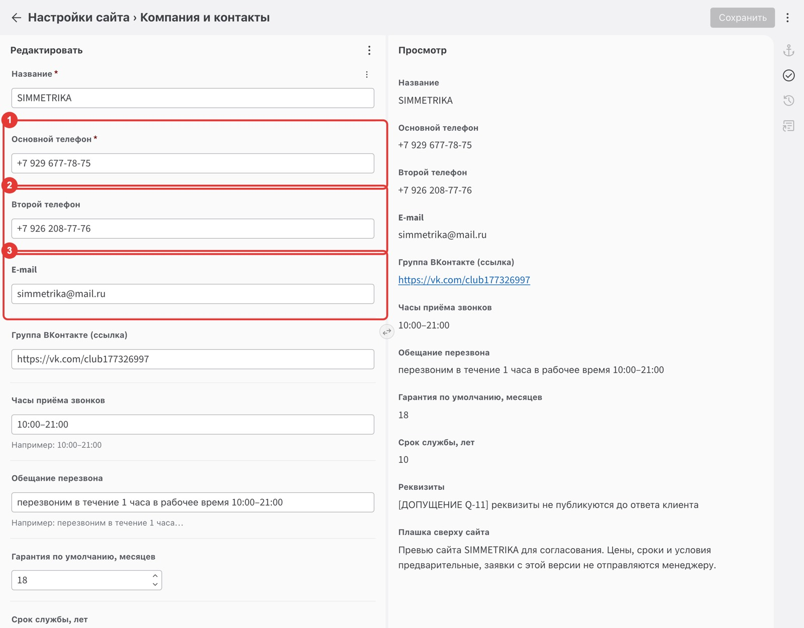
Телефон пишите как хотите видеть на сайте: +7 (495) 123-45-67. Он меняется сразу во всех местах: в шапке, подвале, на контактах, в кнопках звонка. Здесь же группа ВКонтакте, часы приёма звонков, обещание перезвона, гарантия и срок службы по умолчанию, реквизиты.
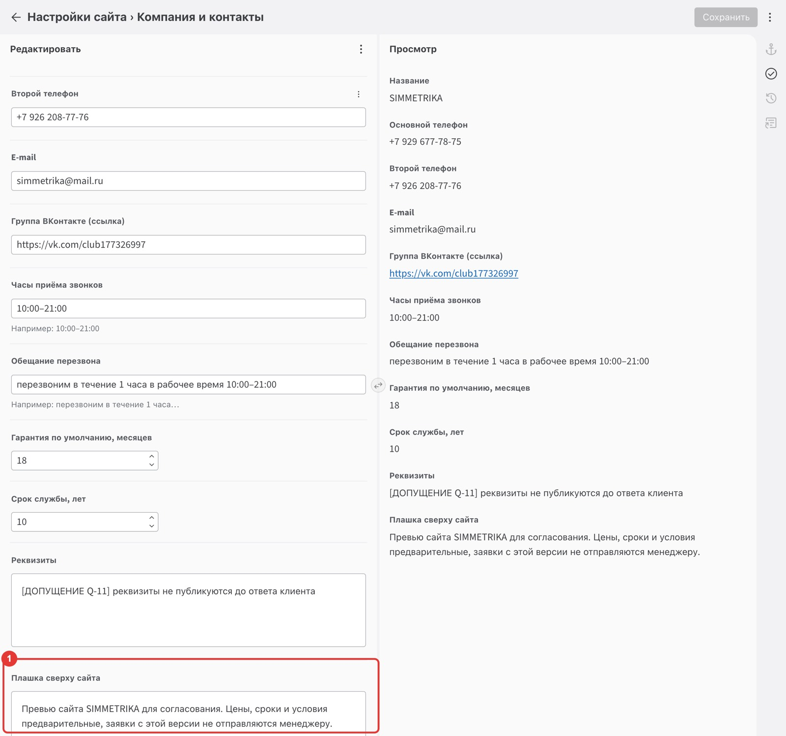
Доставка и оплата
Цифры доставки: в пределах МКАД, за МКАД за км, подъём, сборка, самовывоз, сроки, предоплата, способы оплаты. Они подставляются на страницу доставки и в карточки товаров.
Шоурумы
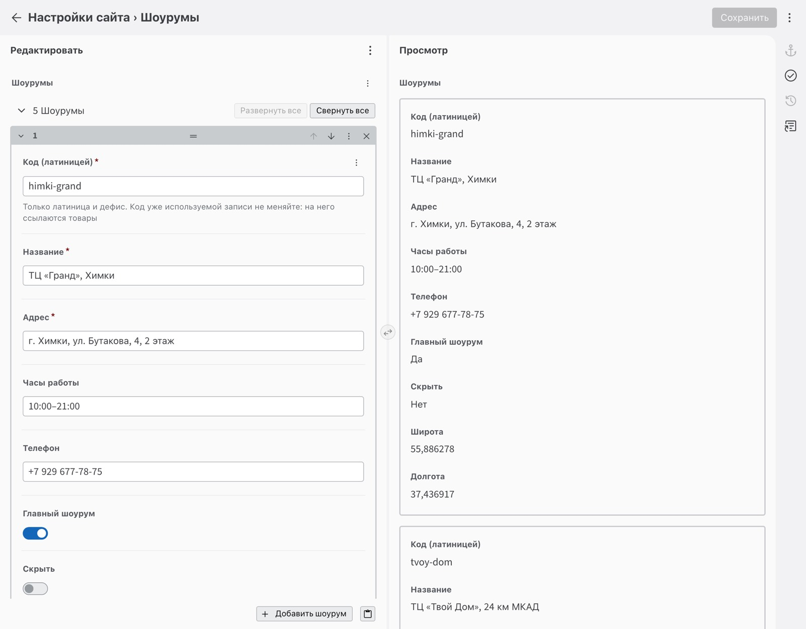
Координаты (широта и долгота) берутся из Яндекс Карт: правой кнопкой по точке → «Что здесь?» → первые две цифры. Без координат шоурум не покажется на карте. Закрылся шоурум: включите «Скрыть», не удаляйте (на него могут ссылаться образцы).
Ткани, цвета, механизмы
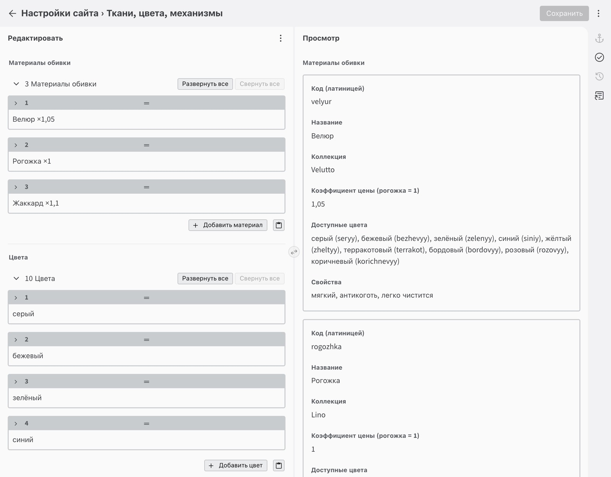
Коэффициент цены: во сколько раз дороже рогожки. Рогожка = 1, велюр сейчас 1.05, жаккард 1.1 (дробь пишется через точку; в списке админка может показать её с запятой, «1,05», это нормально). Цены в этой ткани на всём сайте пересчитаются сами.
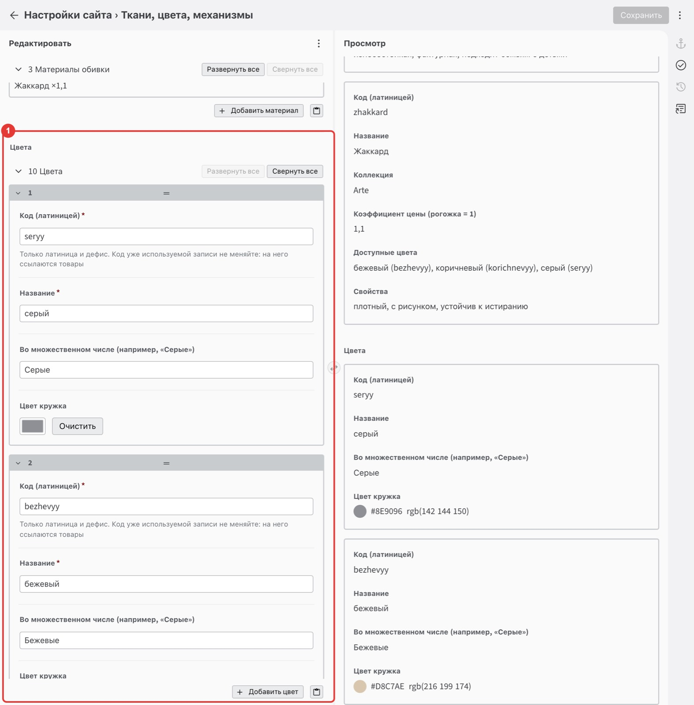
- Новый цвет: «Добавить» в списке «Цвета», код латиницей (
grafit), название («Графит»), множественное («Графитовые»), «Цвет кружка» выбрать в палитре. Без цвета кружка на сайте кружок будет серым. - Новый цвет станет доступен у тканей («Доступные цвета») и у товаров сразу после сохранения.
У ткани, цвета, механизма и шоурума есть «Код (латиницей)». На этот код ссылаются товары. Если поменять или удалить код, который где-то используется, публикация остановится с ошибкой «значение … не найдено (запись удалена?)». Переименовать можно поле «Название», код оставьте прежним. Два одинаковых кода тоже нельзя: «код … уже есть у другой записи».
Меню сайта
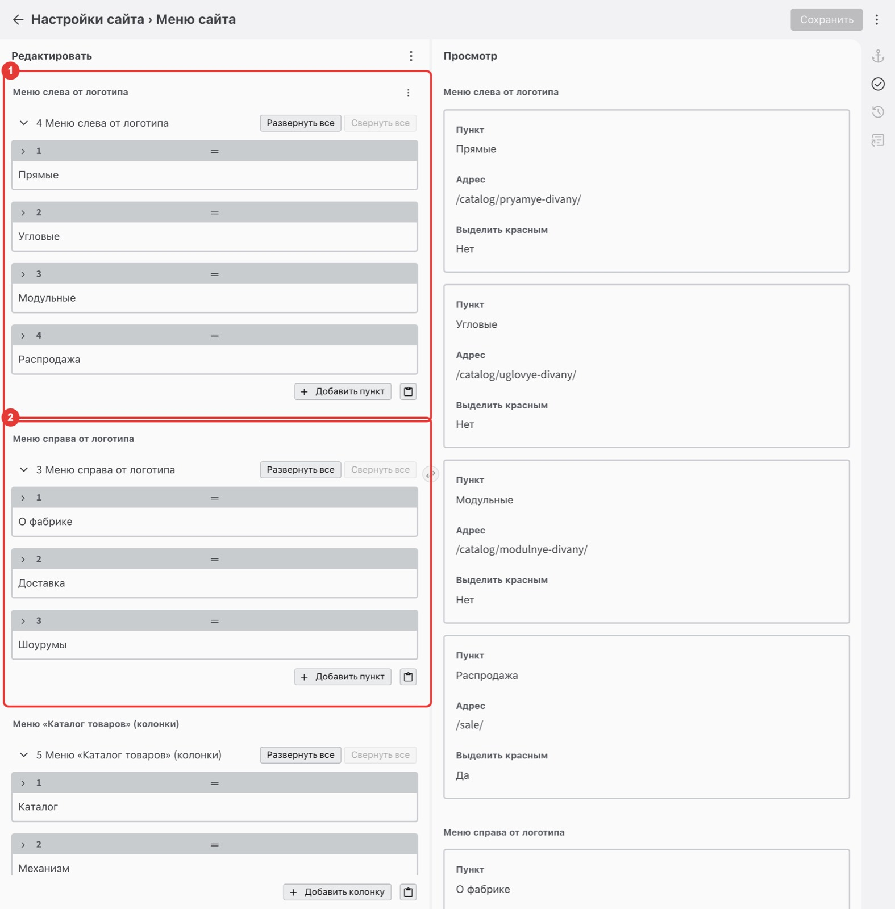
Адрес пункта меню пишется со слэшами: /sale/. Порядок меняется перетаскиванием. Ссылка на несуществующую страницу остановит публикацию.
Переадресации
При смене адреса, скрытии или удалении записи переадресация ставится автоматически. Сюда добавляют только особые случаи, например старые адреса прежнего сайта: /akcii/ → /sale/. Нельзя ставить переадресацию с адреса живой страницы и на несуществующую страницу.
15. Работа с телефона
Админка открывается в браузере телефона по тому же адресу и с тем же токеном. Для быстрых правок (цена, телефон, скрыть товар) это удобно. Длинные тексты и фото удобнее править с компьютера.
16. Публикация не прошла: что значит ошибка
Текст ошибки приходит Алексею в письме от GitHub, он перешлёт его вам (раздел 4). Слева то, что написано в ошибке, справа что делать.
| Сообщение | Что сделать |
|---|---|
| адрес /… уже занят записью …: у двух страниц не может быть одного адреса | Две записи с одним адресом, чаще всего после «Дублировать». Поменяйте адрес у копии. |
| адрес «…»: только строчная латиница, цифры и дефис | В адресе кириллица, пробел, заглавная буква или знак. Перепишите латиницей через дефис. |
| адрес «…» занят служебным разделом | Адреса вроде /admin/ заняты сайтом. Выберите другой. |
| обязательное поле не заполнено | Заполните поле, указанное в ошибке. |
| не заполнен H1 | Заполните «Заголовок H1» в SEO-блоке. |
| FAQ #N: пустой вопрос или ответ | Заполните или уберите этот вопрос. |
| значение «…» не найдено среди записей … (запись удалена?) | Запись ссылается на удалённую категорию, ткань, цвет, механизм или шоурум. Выберите другое значение или верните удалённое. |
| код «…» уже есть у другой записи | Два одинаковых кода в настройках. Сделайте коды разными. |
| ожидалось число, а записано … | В поле цены, размера или скидки буквы или пробелы. Оставьте только цифры. |
| дата в формате ГГГГ-ММ-ДД | Выберите дату в календаре заново. |
| ссылка на несуществующую страницу /…/; кнопка ведёт на несуществующую страницу; «Смотрите также»: страницы … нет | Опечатка в адресе ссылки или страница удалена. Проверьте адрес: слэши в начале и в конце, латиница. |
| неизвестная вставка «:::…»; вставка не закрыта: не хватает строки «:::»; непарные кавычки | Ошибка в блоке «:::» в тексте (раздел 11). |
| правило «…»: неизвестное условие / значение не найдено | Опечатка в правиле блока :::products. Сверьте коды категорий, тканей и цветов. |
| нет файла картинки … | Фото удалили из медиатеки, а в тексте оно осталось. Выберите другое фото. |
| Переадресации: цель … не существует | Переадресация ведёт на несуществующую страницу. Исправьте «Куда вести». |
| файл не читается как JSON; поле «…» не описано в админке | Так бывает, только если файл правили не через админку. Напишите Алексею. |
Если не понятно, что исправить, пришлите Алексею снимок экрана страницы с ошибкой. Сайт тем временем работает в прежнем виде.
17. Чего не делать
| Что | Почему |
|---|---|
| ⋮ → «Редактировать слаг» | Меняет имя файла записи. Адрес страницы меняется полем «Адрес (латиницей)», этого достаточно. |
| ⋮ → «Restore Default» | Сбрасывает все поля записи к пустым значениям по умолчанию. |
| ⋮ → «Clear All» | Очищает все поля записи. |
| Поле «Robots (служебное)» | Управляет индексацией подборок и страниц, ведёт SEO-специалист. |
| Коды тканей, цветов, механизмов, шоурумов | На них ссылаются товары (раздел 14). |
| Код, адрес и шаблон существующих страниц | От них зависят ссылки и вид страницы. |
| Стоковые фото | На сайте только фото фабрики. |
| Чужой компьютер без выхода | Браузер запоминает вход. |
Если всё же нажали «Restore Default» или «Clear All», появится окно на английском. Нажмите Отмена.
Не нажимайте «Сохранить». Нажмите крестик «Отменить редактирование». Откройте запись снова и в окне черновика нажмите Отбросить: запись откроется в сохранённом виде, всё на месте. Это проверено.
18. Что пока не работает
- Заявки с сайта не приходят менеджеру. Это превью: заявка сохраняется только в браузере посетителя. Отправку заявок подключат при переезде на боевой домен.
- Цены, сроки, тарифы доставки, ткани, гарантия и привязка фото к моделям заполнены как рабочие допущения до ответов фабрики. Их нужно проверить и исправить в первую очередь.
- В некоторых полях стоят пометки
[ДОПУЩЕНИЕ Q-05],[ДОПУЩЕНИЕ Q-11]и похожие. Это места, где ждут ответа фабрики (номер вопроса из списка вопросов). Когда ответ есть, впишите правильные данные вместо пометки. - Кнопка «Войти через GitHub» не работает, входите по токену.
- Часть надписей админки на английском («Item removed.», «Show Errors», «Restore Default», «Clear All», «The reference to it in another entry will be removed as well.»). Это сама программа админки, на сайт они не попадают.
- Сайт целиком закрыт от поисковиков, пока он на тестовом адресе. Это нормально.
Перед передачей админку прошли полностью на копии сайта: правка, сохранение, черновики, копирование, удаление, восстановление, загрузка фото, новые категория, страница, подборка и новость, меню, переадресации, телефон, смена адреса товара, 30 типичных ошибок менеджера (каждая должна остановить публикацию с понятным сообщением) и работа с телефона. Найденные ошибки исправлены. Вход по настоящему токену и кнопка «Опубликовать изменения» проверяются при первом входе вместе с Алексеем.
Приложение. Как выдать токен (для Алексея)
Репозиторий сайта takedown-desing/simmetrika-site лежит в личном аккаунте GitHub. Fine-grained токен может выпустить только владелец аккаунта, поэтому токен для менеджера выпускает Алексей из аккаунта takedown-desing.
- Войти в GitHub под
takedown-desingи открытьgithub.com/settings/personal-access-tokens/new(Settings → Developer settings → Personal access tokens → Fine-grained tokens → Generate new token). - Token name: «Админка SIMMETRIKA, менеджер (имя)». Expiration: срок, например 90 дней или до конкретной даты.
- Resource owner:
takedown-desing. Repository access: «Only select repositories» →simmetrika-site. - Permissions → Repository permissions → Contents: Read and write. Metadata: Read-only выставится само. Остальное не трогать.
- Generate token, скопировать (показывается один раз) и передать менеджеру лично или в защищённом канале.
- Отозвать: та же страница Fine-grained tokens → токен → Delete. Админка у менеджера сразу перестанет сохранять.
Каждое сохранение в админке это коммит в репозиторий с подписью «Админка: изменено …» от имени владельца токена. История правок и откат любой правки доступны в GitHub.